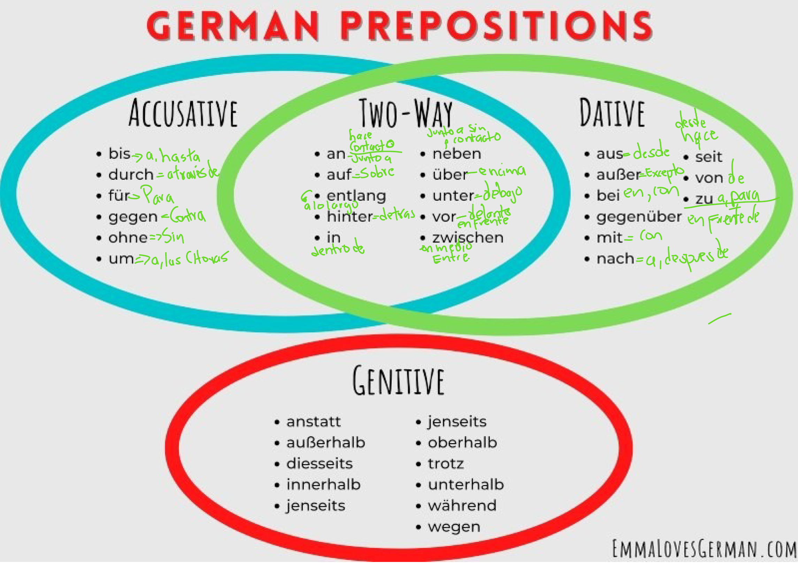

📖 German Prepositions Reference Chart

Complete overview of German prepositions by case
Source: EmmaLovesGerman.com
Cada preposición puede usar el caso Dativo (ubicación estática, ¿Dónde? - Wo?) o el caso Acusativo (movimiento hacia un lugar, ¿A dónde? - Wohin?).
| 🇩🇪 Präposition 🇬🇧 Preposition 🇪🇸 Preposición |
🇩🇪 Aussprache 🇬🇧 English 🇪🇸 Español |
Dativ Beispiel 1 (Wo?) | Dativ Beispiel 2 (Wo?) | Akkusativ Beispiel 1 (Wohin?) | Akkusativ Beispiel 2 (Wohin?) |
|---|---|---|---|---|---|
| an 🖼️ |
🇩🇪 /an/ 🇬🇧 at, on (vertical) 🇪🇸 en, junto a |
Das Poster hängt an der Wand.🇬🇧 The poster is hanging on the wall. 🇪🇸 El póster está colgado en la pared. |
Wir warten am Bahnhof.🇬🇧 We are waiting at the train station. 🇪🇸 Esperamos en la estación de tren. |
Ich hänge das Poster an die Wand.🇬🇧 I hang the poster onto the wall. 🇪🇸 Cuelgo el póster en la pared. |
Stell dich bitte an die Tür.🇬🇧 Please stand by the door. 🇪🇸 Por favor, ponte junto a la puerta. |
| auf 📖 |
🇩🇪 /auf/ 🇬🇧 on (horizontal) 🇪🇸 sobre, en |
Das Buch liegt auf dem Tisch.🇬🇧 The book is lying on the table. 🇪🇸 El libro está sobre la mesa. |
Die Katze schläft auf dem Sofa.🇬🇧 The cat is sleeping on the sofa. 🇪🇸 El gato duerme en el sofá. |
Ich lege das Buch auf den Tisch.🇬🇧 I lay the book onto the table. 🇪🇸 Pongo el libro sobre la mesa. |
Wir klettern auf das Dach.🇬🇧 We are climbing onto the roof. 🇪🇸 Subimos (escalando) al tejado. |
| hinter 🌳👤 |
🇩🇪 /hínter/ 🇬🇧 behind 🇪🇸 detrás de |
Er steht hinter dem Baum.🇬🇧 He is standing behind the tree. 🇪🇸 Él está parado detrás del árbol. |
Das Auto parkt hinter dem Haus.🇬🇧 The car is parked behind the house. 🇪🇸 El coche está aparcado detrás de la casa. |
Er geht hinter den Baum.🇬🇧 He is going behind the tree. 🇪🇸 Él va detrás del árbol. |
Der Ball rollt hinter den Schrank.🇬🇧 The ball rolls behind the wardrobe. 🇪🇸 La pelota rueda detrás del armario. |
| in 🏠 |
🇩🇪 /in/ 🇬🇧 in, into 🇪🇸 en, dentro de |
Ich bin im Haus.🇬🇧 I am in the house. 🇪🇸 Estoy en la casa. |
Die Fische schwimmen im See.🇬🇧 The fish are swimming in the lake. 🇪🇸 Los peces nadan en el lago. |
Ich gehe ins Haus.🇬🇧 I am going into the house. 🇪🇸 Voy a la casa. |
Er springt in den See.🇬🇧 He jumps into the lake. 🇪🇸 Él salta al lago. |
| neben 🚗🧍 |
🇩🇪 /nében/ 🇬🇧 next to, beside 🇪🇸 al lado de |
Die Lampe steht neben dem Sofa.🇬🇧 The lamp is standing next to the sofa. 🇪🇸 La lámpara está al lado del sofá. |
Die Apotheke ist neben der Bank.🇬🇧 The pharmacy is next to the bank. 🇪🇸 La farmacia está al lado del banco. |
Ich stelle die Lampe neben das Sofa.🇬🇧 I am placing the lamp next to the sofa. 🇪🇸 Pongo la lámpara al lado del sofá. |
Setz dich neben mich!🇬🇧 Sit down next to me! 🇪🇸 ¡Siéntate a mi lado! |
| über ✈️☁️ |
🇩🇪 /über/ 🇬🇧 over, above 🇪🇸 sobre, por encima de |
Die Wolken sind über der Stadt.🇬🇧 The clouds are over the city. 🇪🇸 Las nubes están sobre la ciudad. |
Die Lampe hängt über dem Tisch.🇬🇧 The lamp is hanging over the table. 🇪🇸 La lámpara cuelga sobre la mesa. |
Das Flugzeug fliegt über die Stadt.🇬🇧 The airplane flies over the city. 🇪🇸 El avión vuela sobre la ciudad. |
Der Hund springt über den Zaun.🇬🇧 The dog jumps over the fence. 🇪🇸 El perro salta por encima de la valla. |
| unter 🐈⬛📦 |
🇩🇪 /únter/ 🇬🇧 under, below 🇪🇸 debajo de |
Die Katze liegt unter dem Tisch.🇬🇧 The cat is lying under the table. 🇪🇸 El gato está debajo de la mesa. |
Wir stehen unter der Brücke.🇬🇧 We are standing under the bridge. 🇪🇸 Estamos parados debajo del puente. |
Die Katze kriecht unter den Tisch.🇬🇧 The cat crawls under the table. 🇪🇸 El gato se arrastra debajo de la mesa. |
Der Ball rollt unter das Auto.🇬🇧 The ball rolls under the car. 🇪🇸 La pelota rueda debajo del coche. |
| vor 🧍🚪 |
🇩🇪 /fohr/ 🇬🇧 in front of 🇪🇸 delante de |
Das Auto steht vor dem Haus.🇬🇧 The car is parked in front of the house. 🇪🇸 El coche está aparcado delante de la casa. |
Ich warte vor dem Kino.🇬🇧 I am waiting in front of the cinema. 🇪🇸 Espero delante del cine. |
Ich fahre das Auto vor das Haus.🇬🇧 I am driving the car in front of the house. 🇪🇸 Llevo el coche delante de la casa. |
Er stellt sich vor den Spiegel.🇬🇧 He places himself in front of the mirror. 🇪🇸 Se pone delante del espejo. |
| zwischen 🅰️🧍🅱️ |
🇩🇪 /tsvíshen/ 🇬🇧 between 🇪🇸 entre |
Der Stuhl steht zwischen dem Tisch und dem Bett.🇬🇧 The chair is between the table and the bed. 🇪🇸 La silla está entre la mesa y la cama. |
Das Dorf liegt zwischen den Bergen.🇬🇧 The village lies between the mountains. 🇪🇸 El pueblo se encuentra entre las montañas. |
Ich stelle den Stuhl zwischen den Tisch und das Bett.🇬🇧 I am putting the chair between the table and the bed. 🇪🇸 Pongo la silla entre la mesa y la cama. |
Er setzt sich zwischen die beiden Kinder.🇬🇧 He sits down between the two children. 🇪🇸 Él se sienta entre los dos niños. |